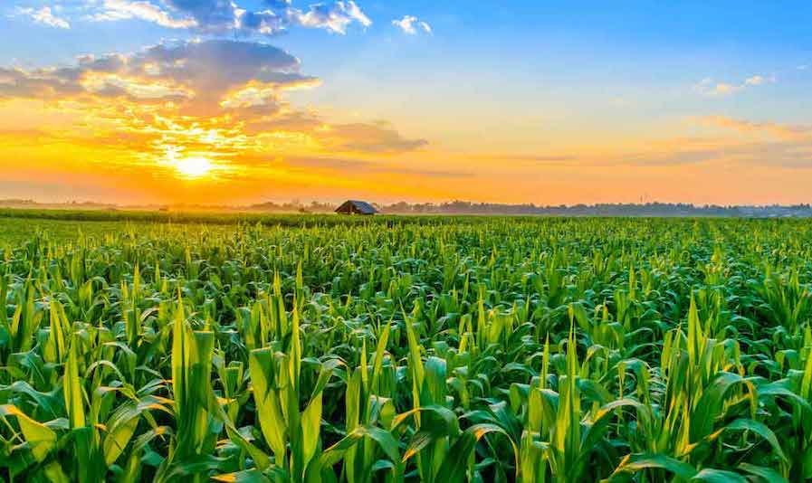
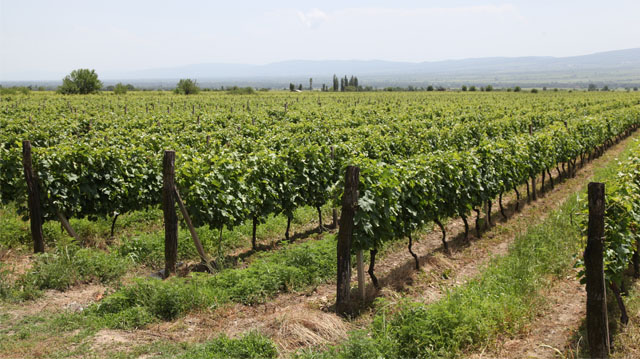

ქართლისგან განსხვავებით კახეთში გვიან შუა საუკუნეებში მნიშვნელოვნად იყო წარმოდგენილი სახნავ-სათესი მიწების საერთო-სასოფლო (თემური) მფლობელობა. კახეთი დაწინაურებული მეურნეობის ქვეყანა იყო. კახეთში განსაკუთრებით მაღალგანვითარებას მიაღწია მევენახეობა-მეღვინეობამ. დღევანდელი საბაზრო ეკონომიკის პირობებში განსაკუთრებით გავრცელებულია რქაწითელი და საფერავი, ასევე მანავის მწვანე. საქართველოს ღვინის ქარხნები უმეტესად კახეთშია კონცენტრირებული. მუშაობს ღვინის ტურიზმი. კახეთის ეთნოგრაფიული ყოფისთვის დამახასიათებელია ისეთი ტკბილეული, როგორიცაა ჩურჩხელა და თათარა. კახეთში განსაკუთრებით განვითარებული იყო მესაქონლეობა. ამ მხრივ გამოირჩეოდა პანკისის ხეობა, რომელიც ცნობილი იყო თავისი მდიდარი ტყეებით, სადაც ღორისთვის მოიპოვებოდა უხვად საკვები. კახეთში მაღალ დონეზე იყო მეაბრეშუმეობაც.
კახეთი მევენახეობისა და მეღვინეობის ერთ-ერთი უძველესი კერაა. აქ ვაზის 80-მდე ჯიშია გავრცელებული. კახეთი აგრეთვე ცნობილია ჩურჩხელით. ბამბის ძაფზე ასხმულ ნიგოზს, თხილს, ქიშმიშს ან ჩამიჩს თათარაში სამჯერ ავლებენ. ასე მზადდება აღმოსავლეთ საქართველოში ჩურჩხელა და დასავლეთ საქართველოში ჯანჯუხა. კარგი ჩურჩხელა და ჯანჯუხა გაზაფხულამდე ძლებს. საუკუნეების განმავლობაში ქართველ მოლაშქრეთა ერთ-ერთი მთავარი საკვები ჩურჩხელა იყო. დიპლიპიტო — დასარტყამი საკრავია. იგი შედგება ტოლი სიმაღლის (20-25სმ) და სხვადასხვა დიამეტრის თიხის ორი ქილისაგან, რომლებზეც ციკნის ტყავი ან ხარის ფაშვია გადაკრული. ნაირფრად მოხატული ქილები თასმითაა გადაბმული. დიპლიპიტოზე ხის ორი პატარა ჯოხით უკრავენ. ჟღერადობის გასაძლიერებლად ტყავს ცეცხლზე ათბობენ.
